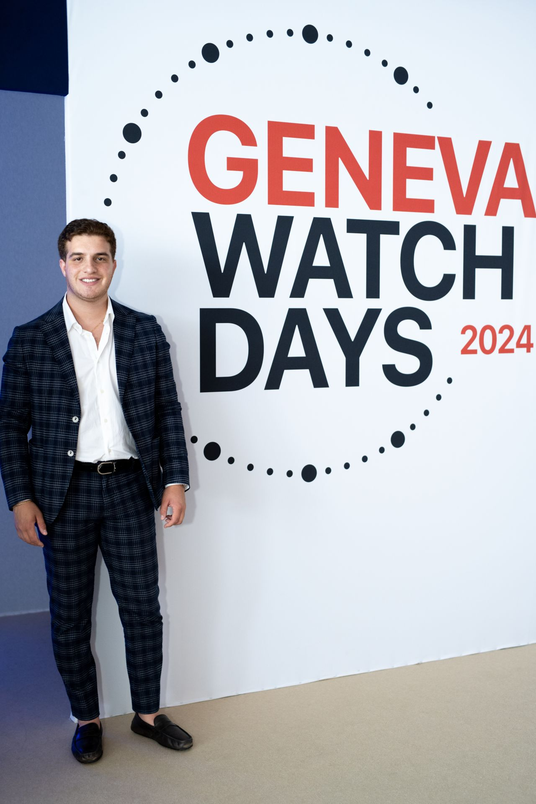

About BEZERU
BEZERU began as a curiosity, and it grew into a safe space to talk about watches in a more honest way. Not just specs or status, but the things collectors actually live with: design, fit, culture, and long-term value.
My name is Yousef Qubain. My interests sit at the intersection of independent brands, modern releases, and vintage context, especially the way culture can quietly influence watch design and taste around the world. BEZERU exists to explore those connections, highlight underdogs, and explain why certain watches matter beyond marketing.
My relationship with watches started early. My great-grandfather was a watch retailer across the Middle East, and growing up in a culture that values tradition and history, I heard about his journeys through Europe, especially Switzerland, where he would travel to source exceptional pieces. I first heard these stories through my grandmother, and the passion he had for watches stayed with me. Over time, that became my own curiosity and ambition.
Later, I interned at Richemont, home to some of the most respected watch maisons in the world. Seeing the industry from the inside made everything feel more real. It reminded me that behind every watch is a chain of people, decisions, and details, and that the best pieces carry more than branding. They carry intention, craft, and a kind of meaning you only notice when you slow down.
That is the spirit behind BEZERU.